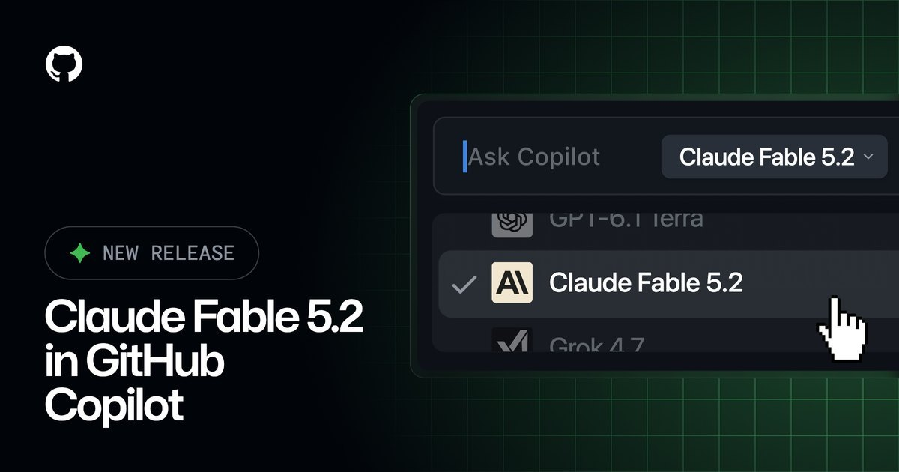
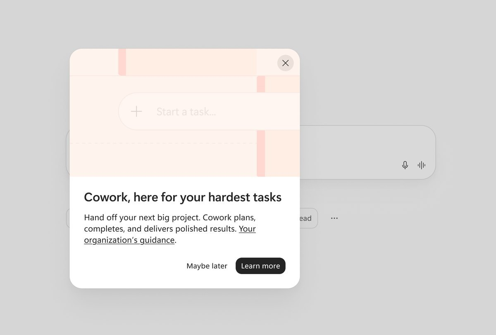
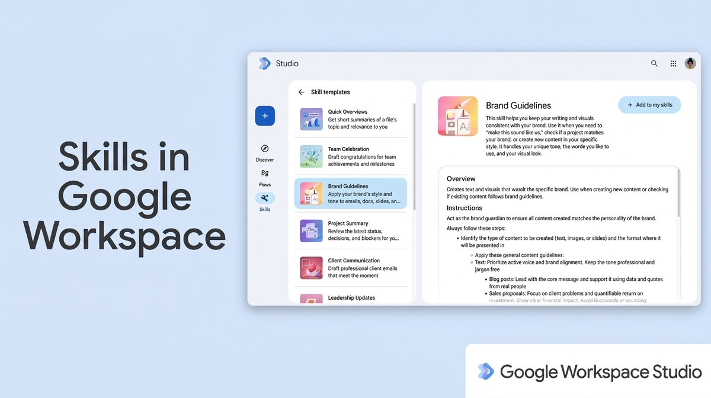
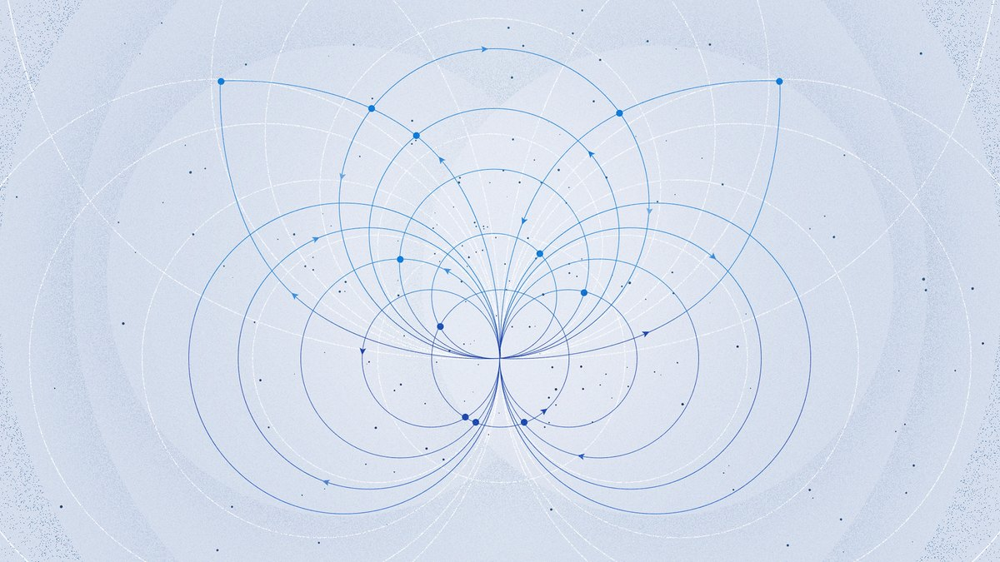
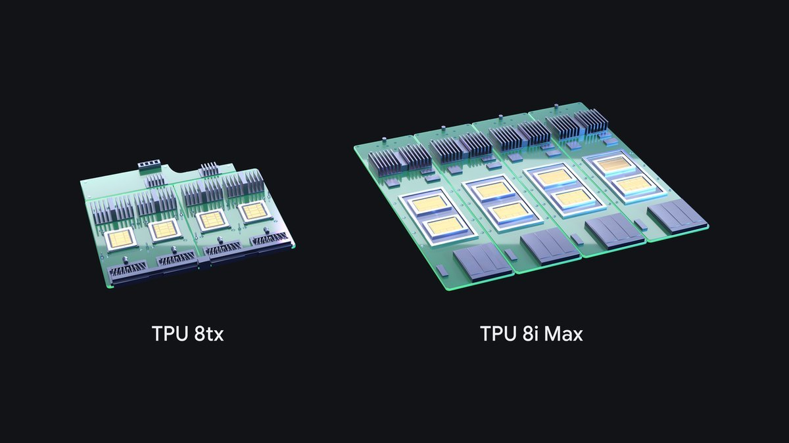

AI
Brief
Monday edition
Anthropic ships Claude Fable 5.2 at a lower price
Also: Microsoft puts its usage-billed agents in front of every Copilot seat, Google brings skills to Workspace, Meta prices a model for agent sub-tasks, and Google builds TPUs for agents.
What matters today

Fable 5.2 ships
Anthropic releases Claude Fable 5.2 and Mythos 5.2.
- Available now on AWS, Google Cloud and Azure at $8 input and $40 output per million tokens, a lower price; output up to 30% faster than 5.1.
- Scores: 69.9% on FrontierSWE v2 against 62.3% for Opus 5.5. Mythos 5.2 is the same model with fewer safeguards, for vetted groups only.
- In Copilot: generally available; needs data retention by default.
Why it mattersThe frontier now ships as one model sold in tiers by trust. For agent builders, safeguards and retention terms become a buying criterion next to price and score.

Agents on every seat
Microsoft will show Cowork, Code and Autopilot to every Copilot user.
- Default: from the end of January 2027 the entry points appear for all Microsoft 365 Copilot licensed users, even where the organization has not turned them on.
- Billing: all three are usage-based; users without a spending policy see Request access or Learn more. Admin setting in mid-November, a custom guidance link in mid-December.
Why it mattersThe Copilot seat becomes a storefront: the license buys reach, metered use pays for the agent. Budget fights move from annual procurement to per-task spend.

Skills come to workspace
Gemini skills reach Gmail, Docs, Slides, Drive and Chat.
- What: reusable instructions in the open SKILL.md format, built in Workspace Studio or Docs, applied automatically or by @mention; they can start Studio flows.
- Rollout: Rapid Release from November 9, Scheduled Release from November 30; on by default; English only; not yet in Sheets or Meet.
Why it mattersWith a shared file format, a team's know-how becomes portable between assistants. Lock-in moves away from the instructions and toward the data, flows and chat surface where skills run.

A cheap model for sub-tasks
Meta releases Muse Ember for agent sub-tasks.
- Price: $0.10 input and $0.50 output per million tokens on the Meta Model API; 1M-token context, up to 512K output.
- Meta's numbers: 37.8% on AutomationBench-AA against 13.9% for Claude Haiku 5.5 and 20.2% for GPT-6 Luna; Haiku's best score at about a third of the cost.
Why it mattersAgent runs split by job: a frontier model plans, a cheap one does the repeat steps. As sub-task prices fall, margin moves to whoever owns the harness that routes between them.

TPUs for agents
Google adds two TPU systems built for agents.
- TPU 8tx: confidential inference that keeps data and weights protected while in use, with up to 2x lower latency than TPU 8t.
- TPU 8i Max: two 8i chips on one package for long context, with double the compute, SRAM and HBM bandwidth of TPU 8i. Google counts nearly 100 TPU customers.
Why it mattersChips are now sold by agent workload: secure execution for regulated data, memory for million-token context. The confidential tier targets buyers who keep sensitive work off cloud agents.
Also in AI today
- Microsoft 365 Copilot App Blocks: calculators, dashboards, forms and simulations render inside Copilot Chat; rolling out worldwide, due to complete in early November.
- Microsoft on agents and SemVer: with identical breaking code, Claude Sonnet 5.5 checked a patch-labeled upgrade in 2 of 10 runs and a major one in 10 of 10; Opus 5.5 and GPT-6.1 models checked every time.
- GitHub secret scanning: now scans Actions workflow logs; public preview for Enterprise Cloud with Secret Protection or Advanced Security; off by default.
- ChatGPT Enterprise: now sold through AWS Marketplace, on existing AWS purchasing and billing.
- AWS Quick: Amazon Quick, its AI workspace with agents, is renamed AWS Quick; Quick Sight becomes AWS Quick Sight; nothing else changes.
- Sourcegraph Cody: reaches end of life on January 31, 2027; Sourcegraph will focus on code search and context for the coding agents teams choose.
- ElevenAgents Campaign Manager: voice agents run outbound campaigns to a set outcome, with retries in calling windows and context carried between calls; available now.
- Google AI Studio: Maps Platform now works inside AI Studio from a prompt, with no credit card up to daily free quotas.
- Anthropic IPO: reportedly moving ahead, with a valuation range set this week and trading as soon as late next week.
- Microsoft FORGE Lab: used agentic tools to find memory-safety bugs in Rust's core and standard libraries, some reachable from safe code; two reports remain open.
- ByteDance Seedream 5.5: image model that keeps unchanged areas intact over 100 edit rounds and outputs transparent backgrounds; rolling out in Doubao, Jimeng and Volcengine.
- Apple Intelligence: server features such as Siri AI have daily limits; extra use will come for a fee, included with most iCloud+ plans; no date or price.
- Adobe and Disney: a multi-year alliance to build AI-powered tools for Disney's creative work.